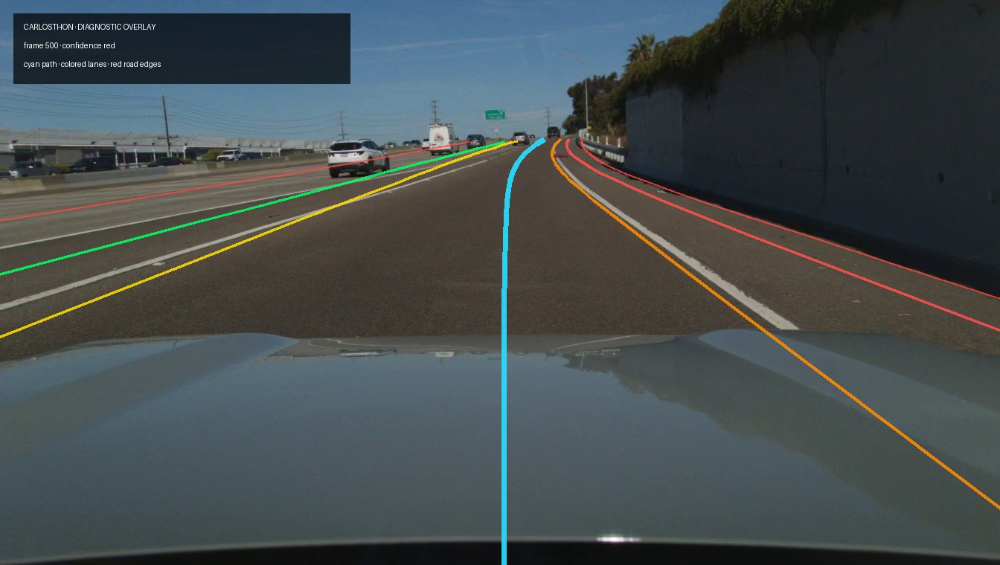

Carlosthon incident review
Local openpilot model/video artifact · synchronized diagnostic overlay

10-second sequence review
← Frame
−1 second
▶ Play
+1 second
Frame →
Cyan:
modelV2 predicted path
Green:
lane line 0
Yellow:
lane line 1
Orange:
lane line 2
Red:
road edges / lane line 3
Colors identify source arrays, not confidence.